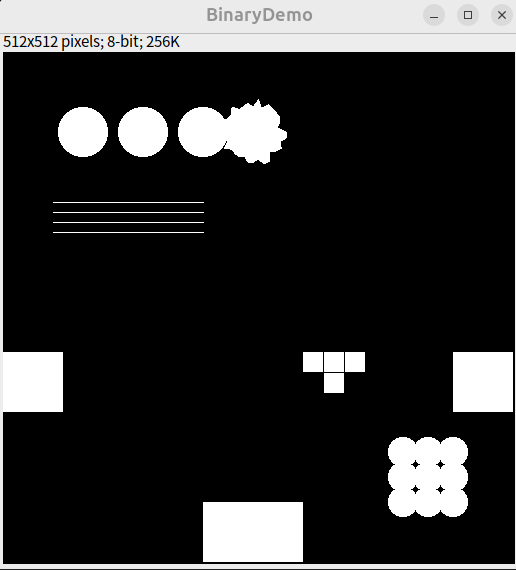

形態學運算（Morphological Operations）
形態學運算主要應用於二值影像，用來分析與處理影像中物件的形狀、結構與分布。相關功能集中於 Process > Binary > ...子選單中。
基本操作
-
Make Binary 建立二值圖： 將影像轉換成黑白（0/255）圖像。預設會根據選取區域或整張影像的直方圖，自動決定閾值。若已設定閾值（
Image > Adjust > Threshold），將會跳出對話框詢問設定前景/背景顏色，以及是否反轉黑白。 -
Convert to Mask 轉為遮罩： 根據目前的閾值設定將影像轉成二值圖。若未設定閾值，則會自動計算。預設輸出為「反轉 LUT」（白為 0、黑為 255），除非在
Process > Binary > Options中勾選了 Black Background。
侵蝕與膨脹（Erode & Dilate）
-
Erode 侵蝕： 從黑色物件邊緣移除像素，相當於縮小物件。可用來去除尖角、毛刺或細小突出。對灰階影像可使用
Process > Filters > Minimum模擬。 -
Dilate 膨脹： 向黑色物件邊緣加入像素，相當於擴大物件。可填補小孔或斷裂。對灰階影像可使用
Process > Filters > Maximum模擬。
組合操作
-
Open 開啟： 先侵蝕再膨脹。可移除小雜訊、斷開細連線。適合清除背景雜點而不影響主體。
-
Close 關閉： 先膨脹再侵蝕。可填補小孔洞、連接相近物體。適合使主體更為連貫。
其他操作
-
Skeletonize 骨架化： 持續移除物體邊緣像素，直到只剩單像素寬的骨架。用於分析結構拓撲（如細胞通路）。
-
Outline 描邊： 對物件產生單像素寬邊框。可視為邊緣檢測的一種形式。
-
Distance Map 距離變換： 計算每個前景像素與最近背景像素的歐式距離，結果為灰階圖，產生Euclidian distance map (EDM)。適合用於分析粒子間距或後續分割。
-
Ultimate Points 終極點： 對距離圖找出每個粒子內最大內切圓的中心，灰階值代表半徑。可作為分割粒子依據。產生ultimate eroded points (UEPs)。
-
Watershed 分水嶺分割： 自動分離接觸或重疊的粒子。流程包含建立距離圖、找終極點，然後從終極點開始膨脹直到互相接觸為止。適用於圓形、不重疊太多的粒子分離。
-
Voronoi 沃羅諾伊分割： 依據與最近兩個粒子的邊界距離，為每個粒子建立一個區域。適合做為粒子領域劃分（Voronoi tessellation）。
設定選項（Options）
透過 Process > Binary > Options... 可調整以下參數：
-
Iterations（次數）： 設定侵蝕、膨脹、開啟、關閉等操作的重複次數。
-
Count（鄰近像素數）： 決定侵蝕/膨脹時像素被加入/移除所需的鄰近像素數。
-
Black Background： 勾選此選項代表背景為黑，物件為白。這會影響大多數形態操作與距離圖的計算。
可用下列方式設定：
// Plugin
Prefs.blackBackground = true;
// Macro
setOption("black background", true);
-
Pad Edges when Eroding： 勾選時，侵蝕操作不會作用於影像邊緣（避免邊界損失）。
-
EDM Output（距離圖輸出格式）： 設定 Distance Map、Ultimate Points、Voronoi 等輸出的格式：
-
"Overwrite"：覆蓋原圖（8-bit）
-
"8-bit" / "16-bit" / "32-bit"：輸出為新的影像，32-bit 為 subpixel 精度。
-
實作
執行以下Macro
多種幾何圖形
- 進行各種二值化操作，觀察這些圖形的變化

// 建立空白影像
newImage("BinaryDemo", "8-bit black", 512, 512, 1);
setForegroundColor(255, 255, 255);
// ---------- 粗圓 + 毛刺 ----------
for (i = 0; i < 3; i++) {
x = 80 + i * 60;
y = 80;
r = 25;
makeOval(x - r, y - r, r * 2, r * 2);
fill();
}
// 毛刺圓形
centerX = 250;
centerY = 80;
nPoints = 36;
xPoints = newArray(nPoints);
yPoints = newArray(nPoints);
for (i = 0; i < nPoints; i++) {
angle = 2 * PI * i / nPoints;
r = 25 + random() * 10;
xPoints[i] = centerX + r * cos(angle);
yPoints[i] = centerY + r * sin(angle);
}
makeSelection("polygon", xPoints, yPoints); fill();
// ---------- 細線 ----------
for (i = 0; i < 4; i++) {
y = 150 + i * 10;
makeLine(50, y, 200, y);
run("Draw", "slice");
}
// ---------- 貼邊形狀 ----------
makeRectangle(0, 300, 60, 60); fill();
makeRectangle(450, 300, 60, 60); fill();
makeRectangle(200, 450, 100, 60); fill();
// ---------- 破碎物件 ----------
setColor(255, 255, 255);
makeRectangle(300, 300, 20, 20); fill();
makeRectangle(321, 300, 20, 20); fill();
makeRectangle(342, 300, 20, 20); fill();
makeRectangle(321, 321, 20, 20); fill();
// ---------- 密集群圓 ----------
x0 = 400;
y0 = 400;
r = 15;
for (i = 0; i < 3; i++) {
for (j = 0; j < 3; j++) {
dx = x0 + i * 25;
dy = y0 + j * 25;
makeOval(dx - r, dy - r, r * 2, r * 2);
fill();
}
}
// 二值化
run("Make Binary");
細胞分佈
執行以下macro，產生三張圖片，模擬不同的粒子分佈，試試看執行Voronoi分隔。
// 參數設定
width = 512;
height = 512;
pointRadius = 3;
// 建立空白影像
newImage("Multi-Pattern Particles", "8-bit black", width, height, 1);
setForegroundColor(255, 255, 255);
// -------------------- 區域1：隨機分佈 --------------------
nRandom = 50;
for (i = 0; i < nRandom; i++) {
x = random()*160 + 10; // 區域X: [10,170]
y = random()*160 + 10; // 區域Y: [10,170]
makeOval(x - pointRadius, y - pointRadius, pointRadius*2, pointRadius*2);
fill();
}
// -------------------- 區域2：密集群聚 --------------------
nClusters = 3;
pointsPerCluster = 20;
for (c = 0; c < nClusters; c++) {
cx = 200 + c * 30 + random()*10; // 區域X: 約在 200-300
cy = 60 + random()*60;
for (i = 0; i < pointsPerCluster; i++) {
dx = random()*20 - 10;
dy = random()*20 - 10;
x = cx + dx;
y = cy + dy;
makeOval(x - pointRadius, y - pointRadius, pointRadius*2, pointRadius*2);
fill();
}
}
// -------------------- 區域3：規則排列 --------------------
for (i = 0; i < 6; i++) {
for (j = 0; j < 6; j++) {
x = 350 + i * 20;
y = 50 + j * 20;
makeOval(x - pointRadius, y - pointRadius, pointRadius*2, pointRadius*2);
fill();
}
}
// 完成後進行二值化
run("Make Binary");